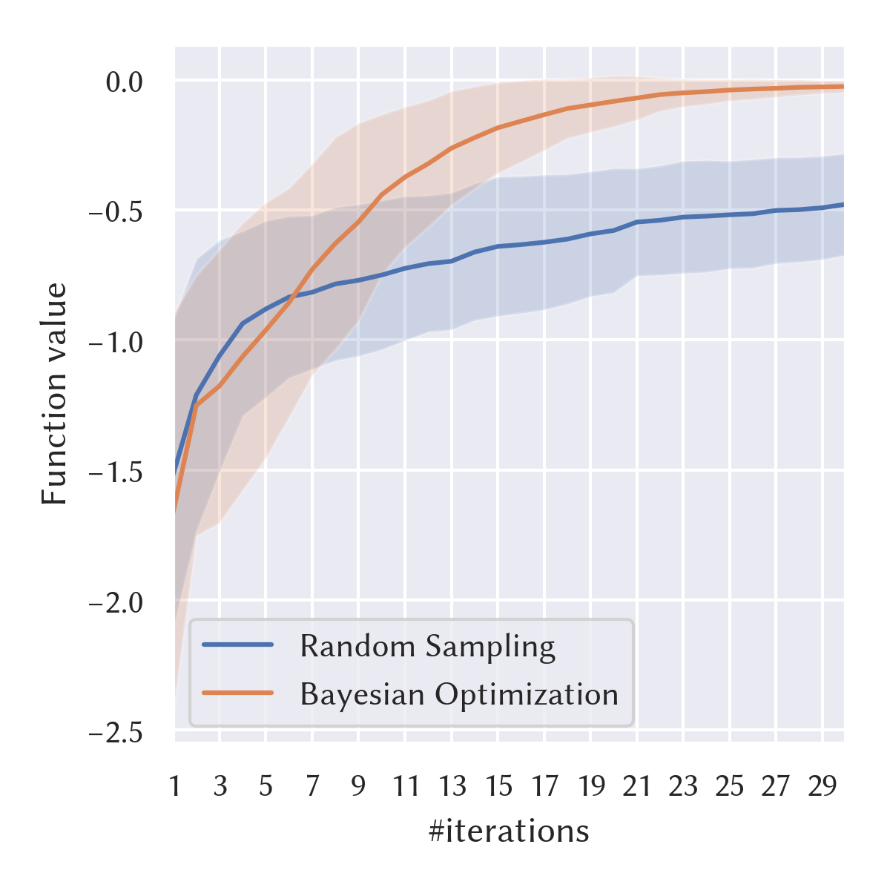

bayesian-optimization
Bayesian optimization (BO) is a black-box global optimization algorithm. During the iterative process, this algorithm determines the next sampling point based on Bayesian inference of the latent function.
BO is likely to find a reasonable solution with fewer function evaluations than other optimization algorithms. Thus, it is suitable for problems with expensive-to-evaluate objective functions.
Header
#include <mathtoolbox/bayesian-optimization.hpp>
Internal Dependencies
Math and Algorithm
Problem Formulation
This implementation is for solving maximization problems in the following form: where represents search variables, is the search space, and is the objective function to be maximized.
Currently, this implementation assumes that the search space is a hyperrectangle represented as
Surrogate Function Representation
This implementation assumes the Gaussian process prior. That is, it performs Gaussian process regression using the observed data.
(TODO)
Acquisition Functions
Currently, it supports the expected improvement (EI) function only.
(TODO)
Examples
Optimizing a One-Dimensional Function

Performance
The following plot shows a result of optimizing a simple objective function: 50 times with random initial solutions. As a baseline, it also shows a result by the same setting except for using random uniform sampling instead of BO.

// Define the target problem
const int num_dims = 5;
const auto f = [](const Eigen::VectorXd& x) { return - x.squaredNorm(); };
const auto lower_bound = Eigen::VectorXd::Constant(num_dims, -1.0);
const auto upper_bound = Eigen::VectorXd::Constant(num_dims, +1.0);
// Instantiate an optimizer
mathtoolbox::BayesianOptimizer optimizer{f, lower_bound, upper_bound};
// Perform optimization iteration
for (int i = 0; i < 50; ++i) { optimizer.Step(); }
// Retrieve the found solution
const Eigen::VectorXd x_star = optimizer.GetCurrentSolution();
Useful Resources
- Yuki Koyama, Issei Sato, Daisuke Sakamoto, and Takeo Igarashi. 2017. Sequential line search for efficient visual design optimization by crowds. ACM Trans. Graph. 36, 4, pp.48:1--48:11 (2017). DOI: https://doi.org/10.1145/3072959.3073598
- Bobak Shahriari, Kevin Swersky, Ziyu Wang, Ryan P. Adams, and Nando de Freitas. 2016. Taking the Human Out of the Loop: A Review of Bayesian Optimization. Proc. IEEE 104, 1, pp.148--175 (2016). DOI: https://doi.org/10.1109/JPROC.2015.2494218
- (TODO)